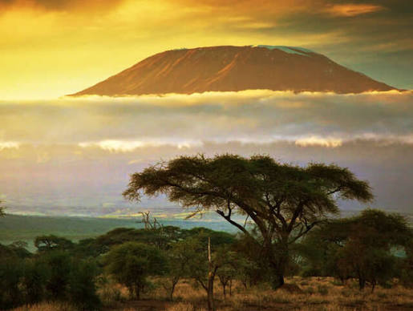

Choose Your Adventure

Marangu Route
Known as the "Coca-Cola" route, Marangu is the only Kilimanjaro trail with mountain huts instead of tents, making it the most comfortable option. The gradient is gentle and the path well-trodden, but the fast ascent profile means a lower summit success rate unless extended to 6 days — we always recommend the extra day for proper acclimatization.
Ask About This RouteMachame Route
The "Whiskey" route is the most scenic way up Kilimanjaro, climbing through rainforest, moorland, alpine desert and the dramatic Barranco Wall before reaching the summit. It’s camping-based throughout and steeper than Marangu, so fitness matters — on 7 days it offers one of the best summit success rates of any route.
Ask About This RouteLemosho Route
Lemosho starts from the remote western side of the mountain, crossing the wide-open Shira Plateau before joining the summit route. Its extra distance and days give your body more time to acclimatize, which is why it consistently records some of the highest summit success rates — ideal if you want a quieter trail and the best odds of reaching Uhuru Peak.
Ask About This RouteRongai Route
Rongai is the only route that approaches Kilimanjaro from the north, near the Kenyan border, through dry pine forest and open moorland. It sees far fewer trekkers than the southern routes, has a gradual gradient, and is a solid choice during the rainy season since the northern slopes stay drier.
Ask About This RouteUmbwe Route
Umbwe is the shortest and steepest route to the summit, climbing straight through dense forest onto a narrow ridge with dramatic views before meeting the Barranco Wall. It’s camping-only with no easy escape route, so we only recommend it to fit, experienced trekkers looking for a tougher, more dramatic climb.
Ask About This RouteWhat's Included
- Kilimanjaro National Park entrance fees
- All required mountain permits
- Professional English-speaking mountain guide
- Experienced porters
- Mountain cook
- Mountain crew wages
- Camping fees
- Quality mountain tents
- Sleeping mattresses
- All meals during the trek
- Safe drinking water during the climb
- Rescue and emergency fees as provided by the park
- Government taxes and applicable fees
- Transport to the Lemosho trailhead
- Transfer from Mweka Gate to Moshi or Arusha
What's Not Included
- International flights
- Domestic flights
- Tanzania visa fees
- Travel and medical insurance
- Personal trekking equipment
- Sleeping bag
- Trekking poles
- Headlamp and personal hiking equipment
- Personal expenses
- Alcoholic and soft drinks
- Laundry services
- Tips for guides, porters, and cook
- Additional hotel accommodation before or after the trek
- Emergency evacuation beyond standard included rescue arrangements
- Optional activities not mentioned in the itinerary
Mount Meru — 3 Days
A brisk two-night climb through Arusha National Park, starting among buffalo, giraffe and colobus monkeys near Momella Gate before rising through montane forest to Meru’s dramatic crater rim. It’s a fast, physical ascent, and a fantastic way to acclimatize before attempting Kilimanjaro.
Ask About This TripMount Meru — 4 Days
The same spectacular route up Mount Meru, spread over an extra night at Saddle Hut for a gentler pace and better acclimatization. Expect wildlife on the lower slopes, sweeping views of Kilimanjaro on a clear morning, and a sunrise summit push along Meru’s knife-edge ridge.
Ask About This TripUdzungwa Trekking
Often called the "Galapagos of Africa," Udzungwa’s rainforest is home to primates and plants found nowhere else on Earth, including the Sanje mangabey and Iringa red colobus. Trails wind through dense jungle to the thundering Sanje Falls, with excellent birdwatching along the way — a rewarding trip for nature lovers away from the usual safari crowds.
Ask About This Trip4-Day Wildlife Safari
A fast-paced introduction to northern Tanzania’s big-name parks: elephant herds and ancient baobabs in Tarangire, flamingos and tree-climbing lions at Lake Manyara, the endless plains of the Serengeti, and a full day exploring the wildlife-packed floor of Ngorongoro Crater in search of the Big Five.
Ask About This Safari7-Day Wildlife Safari
Our full northern circuit, giving each park the time it deserves — more days in the Serengeti to follow the game, a full crater day in Ngorongoro, and an extension to the otherworldly landscape of Lake Natron beneath the active volcano Ol Doinyo Lengai, where flamingos gather by the thousands.
Ask About This Safari
Mikumi National Park
Tanzania’s fourth-largest national park is often called a "mini-Serengeti" for its wide-open Mkata floodplain, where lion prides, elephant herds, giraffes, zebras and buffalo graze in full view right beside the main road. It’s one of the most accessible parks in the country, making it a great option for a shorter safari or a scenic stop if you’re short on time but still want a genuine Big-Five-country experience, with over 400 bird species for keen birders too.
Ask About This Park
Lake Manyara National Park
Tucked beneath the dramatic wall of the Great Rift Valley escarpment, Lake Manyara is famous for its tree-climbing lions and the thousands of flamingos that turn its alkaline shoreline pink. The park packs remarkable variety into a small area — dense groundwater forest alive with blue monkeys and baboons, open grassland herds of wildebeest and buffalo, and the shimmering lake itself. Compact and scenic, it’s a perfect standalone day trip from Arusha or an easy add-on to a longer northern circuit safari.
Ask About This ParkMaasai Cultural Experience
Visit a real Maasai boma (homestead) near Arusha or Ngorongoro and spend time with the community that has herded cattle across these plains for centuries. Warriors welcome you with the traditional Adumu jumping dance, elders explain family and cattle traditions, and women demonstrate the beadwork Maasai culture is famous for. You’ll step inside a traditional mud-and-stick home, learn how fire is made the old way, and hear how the Maasai balance modern life with age-old customs. A respectful, authentic encounter — not a staged show — that pairs naturally with a Kilimanjaro trek or Ngorongoro safari.
Ask About This ExperienceJozani Forest, Zanzibar
Jozani Chwaka Bay is Zanzibar’s only national park and the last natural home of the endangered Zanzibar red colobus monkey, found nowhere else on Earth. Guided trails wind through lush groundwater forest where the colobus troops move at close range, followed by a peaceful boardwalk through mangrove swamp alive with crabs, mudskippers and forest birds. It’s an easy half-day trip from Stone Town, and pairs perfectly with a spice tour or a few days relaxing on Zanzibar’s beaches after your mainland safari or trek.
Ask About This TripNapuru Waterfalls
A hidden gem close to Arusha, Napuru Waterfalls cascades through a shaded pocket of forest into clear natural swimming pools — a refreshing, easy escape without a long drive. The walk in is gentle and family-friendly, guided by local community guides who know the area well, and there’s time to cool off in the pool beneath the falls before heading back. It’s a relaxed half-day outing, easy to combine with a village walk or a coffee farm visit, and a great option on a rest day between treks or safaris.
Ask About This TripMarangu Waterfalls
On the lush southern slopes of Kilimanjaro, the Marangu waterfalls tumble through forest fed by streams straight off the mountain’s glaciers. The trail winds past coffee and banana plantations and traditional Chagga homesteads, with the option to stop at a local home to see how coffee is grown and roasted the traditional way. It’s a scenic, moderate walk with a cool, misty waterfall as the reward at the end — a fantastic half-day trip either before or after a Kilimanjaro climb via Marangu Gate, or as a standalone outing from Moshi or Arusha.
Ask About This Trip